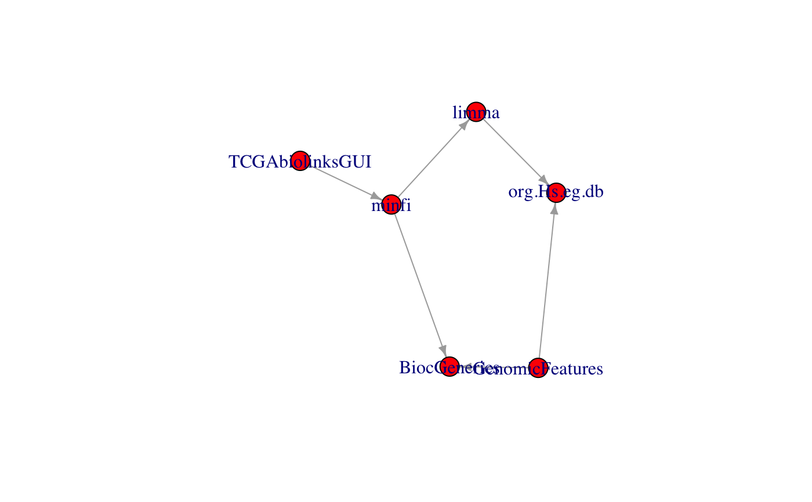

R/buildPkgDependencyGraph.R
inducedSubgraphByPkgs.RdFind the subgraph induced by including specific packages. The induced subgraph is the graph that includes the named packages and all edges connecting them. This is useful for a developer, for example, to examine her packages and their intervening dependencies.
inducedSubgraphByPkgs(g, pkgs, pkg_color = "red")an igraph graph, typically created by
buildPkgDependencyIgraph
character() vector of packages to include. Package names not included in the graph are ignored.
character(1) giving color of named packages. Other packages in the graph that fall in connecting paths will be colored as the igraph default.
library(igraph)
g = buildPkgDependencyIgraph(buildPkgDependencyDataFrame())
#> 'getOption("repos")' replaces Bioconductor standard repositories, see
#> '?repositories' for details
#>
#> replacement repositories:
#> CRAN: https://cloud.r-project.org
g2 = inducedSubgraphByPkgs(g, pkgs=c('GenomicFeatures',
'TCGAbiolinksGUI', 'BiocGenerics', 'org.Hs.eg.db', 'minfi', 'limma'))
g2
#> IGRAPH f9f1778 DN-- 6 3 --
#> + attr: name (v/c), color (v/c), edgetype (e/c)
#> + edges from f9f1778 (vertex names):
#> [1] GenomicFeatures->BiocGenerics minfi ->BiocGenerics
#> [3] minfi ->limma
V(g2)
#> + 6/6 vertices, named, from f9f1778:
#> [1] BiocGenerics GenomicFeatures minfi TCGAbiolinksGUI
#> [5] limma org.Hs.eg.db
plot(g2)
